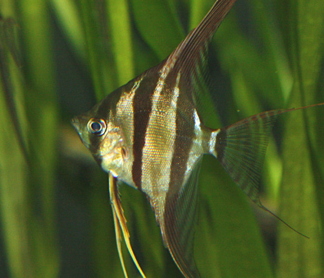
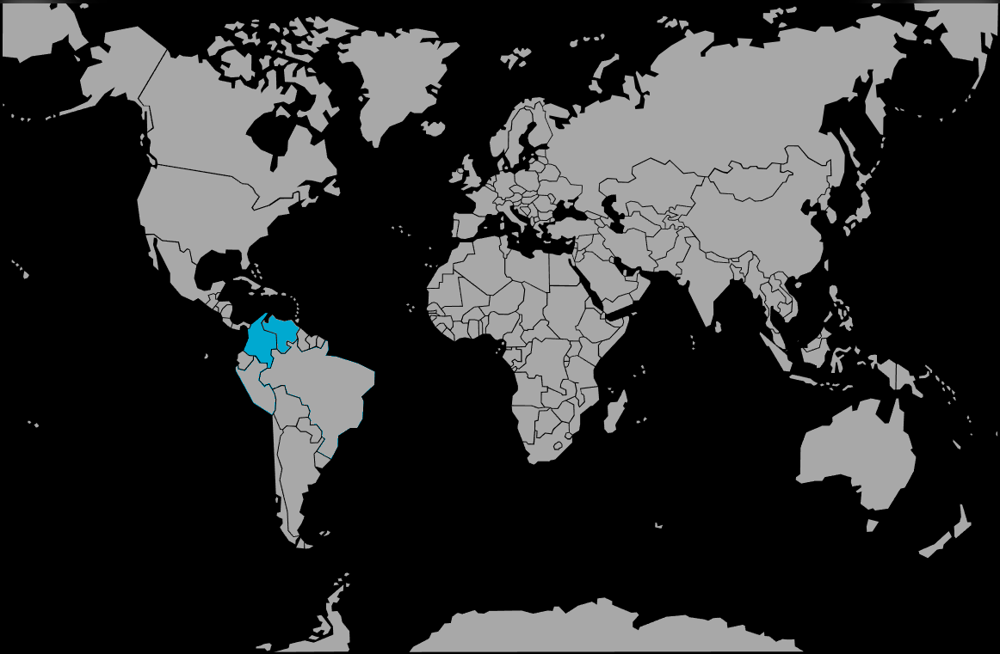

Systématique
- Ordre : Cichliformes
- Famille : Cichlidae
- Genre : Pterophyllum
- Espèce : P. altum
- Auteur : Schultz, 1903

Pterophyllum altum, le scalaire altum ou ange altum, est la plus grande espèce du genre Pterophyllum, atteignant des hauteurs spectaculaires de 40 cm avec ses nageoires dorsales et anales. C'est un grand cichlide d'eau douce d'Amérique du Sud très apprécié pour sa forme majestueuse et son élégance aquatique.
L'espèce affiche un corps comprimé latéralement extrêmement haut et fin, avec une tête de taille réduite. La coloration de base est brun-argenté à doré avec trois larges barres verticales noires bien visibles : la première traverse l'œil, les deux autres sur le corps reliant la nageoire anale à la dorsale. Entre ces bandes, des fines barres supplémentaires sont discernables. Le pédoncule caudal porte une barre noire caractéristique. Les nageoires sont translucides à teinte jaunâtre ou verdâtre selon la lumière. Contrairement à P. scalare, l'altum présente un profil plus élancé et des nageoires dorsales et anales démesurément développées, donnant une silhouette incomparable en aquariophilie.
Le dimorphisme sexuel est très subtil en dehors de la période reproductrice. À maturité, le mâle présente une bosse frontale plus prononcée, tandis que la femelle arborera une papille génitale conique (oviducte) à l'avant de la nageoire anale lors du frai.
Pterophyllum altum est une espèce peu agressive et plutôt paisible en dehors de la période reproductrice. Elle vit naturellement en bancs lâches, se tenant près des structures vegetales. L'espèce demande un espace de nage généreux et se stresse facilement en aquarium de petite taille ou en présence de colocataires inadaptés. Elle affectionne les environnements densément plantés offrant nombreuses cachettes et zones ombragées. La surface au sol de l'aquarium est un élément clé pour réduire le stress et la dominance territoriale.
En période de reproduction, la forma devient extrêmement territoriale, chaque couple défendant férocement sa zone de ponte contre tout intrus, y compris ses congénères. L'espèce se nourrit essentiellement de petits poissons, crevettes et insectes aquatiques en nature, utilisant son profil effilé et ses motifs pour le camouflage et l'approche discrète des proies. Elle utilise sa bouche en succion pour capturer les petites proies à courte distance.
Mode : ovipare pondeur sur substrat découvert; reproduction classique des cichlides.
À maturité, les couples se forment et établissent des territoires à proximité des racines immergées ou des branches d'arbres tombées. Contrairement à P. scalare qui préfère frayer sur des feuilles submergées, P. altum se reproduit préférentiellement sur des racines immergées et des branches en zones de courant modéré. Les parents nettoient méthodiquement la zone de ponte, la préparant durant plusieurs jours. La femelle pond ensuite 250 à 500 œufs en ligne, immédiatement fécondés par le mâle au fur et à mesure.
Les deux parents prennent soin des œufs qu'ils ventilent en alternance avec leurs nageoires pectorales, créant un courant doux. Les œufs non fécondés sont eliminés. À 27°C, l'éclosion intervient après environ 48 heures. Après 3 à 5 jours, les alevins commencent à nager librement. Les parents transportent progressivement les jeunes dans une zone préalablement préparée, opération répétée plusieurs fois les 5 premiers jours. Le couple protège ensuite énergiquement sa progéniture durant les premières semaines de nage libre, formant un groupe cohérent avec les jeunes suivant les parents en formation.
Dimorphisme sexuel : très subtil. Le mâle adulte affiche généralement une bosse frontale bien développée (pas toujours), tandis que la femelle demeure avec le front plat. À maturité sexuelle, la femelle arbore une papille génitale conique (oviducte) visible à l'avant de la nageoire anale lors du frai. En dehors de cette période, la distinction est extrêmement difficile.
Espérance de vie : plus de 10 ans en captivité en conditions optimales. L'espèce est robuste une fois bien acclimatée à un aquarium adéquat.
Pterophyllum altum fréquente naturellement les cours d'eau lents, les forêts inondées (várzea) et les lacs d'eau noire du bassin supérieur de l'Orénoque et du Rio Negro en Amazonie colombienne et vénézuélienne. L'habitat affiche une eau extrêmement acide (pH 4,8–6,2) et très douce (GH 1–5 °dGH), enrichie en tannins créant la fameuse coloration "blackwater". Le courant est lent à modéré, permettant l'installation de la végétation luxuriante. L'espèce occupe principalement les zones à proximité de grosses racines immergées, branches mortes tombées et accumulations de débris végétaux. Le substrat est généralement sablonneux avec couche de matière organique en décomposition.
La température naturelle avoisine 25–31°C, avec une moyenne saisonnière autour de 26–28°C. La profondeur moyenne des habitats avoisine 2 mètres, zones semi-ombragées à bien ombragées sous la canopée forêstière. L'espèce utilise son profil comprimé latéralement comme adaptat au mimétisme visuels parmi les racines et débris.
Répartition

Origine naturelle :
- Bassin supérieur de l'Orénoque et du Rio Negro, Colombie et Venezuela.
- Rivières Atabapo et Inirida (affluents du cours supérieur de l'Orénoque).
- Populations fragmentées dans les lacs d'eau noire et cours lents du bassin du Rio Negro moyen et supérieur.
- Endémique de cette région spécifique d'Amazonie nord.
L'espèce est capturée occasionnellement à l'état sauvage pour l'aquariophilie commerciale, mais la majorité des stocks en captivité proviennent d'élevages européens. Peu d'élevages en Amazonie actuellement. Statut : peu menacée, populations stables (IUCN : LC).
Paramètres de maintenance
Température : 25 à 31°C, idéalement 26–28°C; l'espèce ne devrait pas dépasser 34°C sur longues périodes.
pH : 4,8 à 6,2, fortement acide; pH 5,5–6,0 optimal; filtration sur tourbe fortement recommandée.
GH : 1 à 5 °dGH, eau extrêmement douce; changements d'eau importants tous les 2 semaines.
Courant : lent à modéré; filtration douce, aération discrète.
Volume conseillé : minimum 600 L en aquarium communautaire; 450 L minimum pour un petit groupe (5 individus minimum). Hauteur d'eau 70–80 cm obligatoire; la surface au sol plus importante que la profondeur. Très planté, décoration riche en racines, substrat sablonneux, lumière tamisée.
Régime alimentaire
Régime : carnivore; se nourrit de petits poissons, larves d'insectes aquatiques, crevettes et petits crustacés.
En aquarium, accepte flocons fins, granulés de qualité, nourritures congelées (vers de vase, artémias, daphnies, larves de moustiques) et proies vivantes (petits poissons, alevins, micro-crustacés). L'espèce demande une alimentation variée et régulière, 1 à 2 fois par jour en petites portions.
Attention : l'espèce dévore les crevettes et petits crustacés.